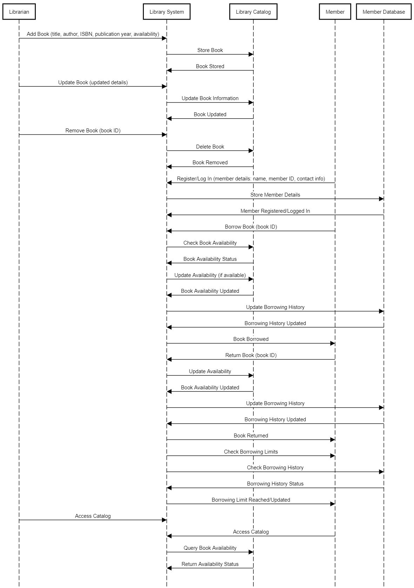

Designing a Library Management System
Requirements:
- The library management system should allow librarians to manage books, members, and borrowing activities.
- The system should support adding, updating, and removing books from the library catalog.
- Each book should have details such as title, author, ISBN, publication year, and availability status.
- The system should allow members to borrow and return books.
- Each member should have details such as name, member ID, contact information, and borrowing history.
- The system should enforce borrowing rules, such as a maximum number of books that can be borrowed at a time and loan duration.
- The system should handle concurrent access to the library catalog and member records.
- The system should be extensible to accommodate future enhancements and new features.
Sequnece Diagram

Classes and Responsibilities:
- Book: Contains details of a book.
- Member: Stores member information and their borrowing history.
- Library: The main interface for performing operations like borrowing, returning, adding, and removing books.
- Transaction: Holds information about each borrowing or return activity.
Code Implementation:
import java.util.*;
import java.util.concurrent.locks.Lock;
import java.util.concurrent.locks.ReentrantLock;
// Class representing Book
class Book {
private String title;
private String author;
private String isbn;
private int publicationYear;
private boolean available;
public Book(String title, String author, String isbn, int publicationYear) {
this.title = title;
this.author = author;
this.isbn = isbn;
this.publicationYear = publicationYear;
this.available = true;
}
public String getTitle() {
return title;
}
public String getIsbn() {
return isbn;
}
public boolean isAvailable() {
return available;
}
public void borrowBook() {
this.available = false;
}
public void returnBook() {
this.available = true;
}
}
// Class representing Member
class Member {
private String name;
private String memberId;
private String contactInfo;
private List<Book> borrowedBooks;
public Member(String name, String memberId, String contactInfo) {
this.name = name;
this.memberId = memberId;
this.contactInfo = contactInfo;
this.borrowedBooks = new ArrayList<>();
}
public String getMemberId() {
return memberId;
}
public List<Book> getBorrowedBooks() {
return borrowedBooks;
}
public void borrowBook(Book book) {
borrowedBooks.add(book);
}
public void returnBook(Book book) {
borrowedBooks.remove(book);
}
public boolean hasReachedMaxBooks(int maxBooks) {
return borrowedBooks.size() >= maxBooks;
}
}
// Class representing Transaction (Borrow or Return)
class Transaction {
private Book book;
private Member member;
private Date transactionDate;
private String transactionType; // "borrow" or "return"
public Transaction(Book book, Member member, String transactionType) {
this.book = book;
this.member = member;
this.transactionType = transactionType;
this.transactionDate = new Date();
}
public void displayTransaction() {
System.out.println("Transaction: " + transactionType + " | Book: " + book.getTitle() +
" | Member: " + member.getMemberId() + " | Date: " + transactionDate);
}
}
// Class representing Library
class Library {
private Map catalog;
private Map members;
private final int MAX_BOOKS = 5; // Maximum books a member can borrow at once
private final Lock lock;
public Library() {
catalog = new HashMap<>();
members = new HashMap<>();
lock = new ReentrantLock();
}
public void addBook(Book book) {
catalog.put(book.getIsbn(), book);
}
public void removeBook(String isbn) {
catalog.remove(isbn);
}
public void addMember(Member member) {
members.put(member.getMemberId(), member);
}
public void borrowBook(String memberId, String isbn) {
lock.lock();
try {
Member member = members.get(memberId);
Book book = catalog.get(isbn);
if (member != null && book != null) {
if (book.isAvailable() && !member.hasReachedMaxBooks(MAX_BOOKS)) {
book.borrowBook();
member.borrowBook(book);
Transaction transaction = new Transaction(book, member, "borrow");
transaction.displayTransaction();
} else if (!book.isAvailable()) {
System.out.println("Book is already borrowed.");
} else {
System.out.println("Member has reached the borrowing limit.");
}
} else {
System.out.println("Member or Book not found.");
}
} finally {
lock.unlock();
}
}
public void returnBook(String memberId, String isbn) {
lock.lock();
try {
Member member = members.get(memberId);
Book book = catalog.get(isbn);
if (member != null && book != null && member.getBorrowedBooks().contains(book)) {
book.returnBook();
member.returnBook(book);
Transaction transaction = new Transaction(book, member, "return");
transaction.displayTransaction();
} else {
System.out.println("Invalid return request.");
}
} finally {
lock.unlock();
}
}
}
// Main class to simulate Library Management System
public class LibraryManagementApp {
public static void main(String[] args) {
Library library = new Library();
// Adding books to library
Book book1 = new Book("Java Programming", "Author A", "12345", 2020);
Book book2 = new Book("Data Structures", "Author B", "67890", 2018);
library.addBook(book1);
library.addBook(book2);
// Adding members
Member member1 = new Member("Alice", "M001", "alice@email.com");
Member member2 = new Member("Bob", "M002", "bob@email.com");
library.addMember(member1);
library.addMember(member2);
// Borrow books
library.borrowBook("M001", "12345"); // Alice borrows Java Programming
library.borrowBook("M002", "67890"); // Bob borrows Data Structures
// Returning books
library.returnBook("M001", "12345"); // Alice returns Java Programming
}
}
Sample Input:
// Adding books to the library
Book book1 = new Book("Java Programming", "Author A", "12345", 2020);
Book book2 = new Book("Data Structures", "Author B", "67890", 2018);
library.addBook(book1);
library.addBook(book2);
// Adding members
Member member1 = new Member("Alice", "M001", "alice@email.com");
Member member2 = new Member("Bob", "M002", "bob@email.com");
library.addMember(member1);
library.addMember(member2);
// Borrow books
library.borrowBook("M001", "12345"); // Alice borrows Java Programming
library.borrowBook("M002", "67890"); // Bob borrows Data Structures
// Returning books
library.returnBook("M001", "12345"); // Alice returns Java Programming
Sample Output:
// Output after Alice borrows Java Programming
Transaction: borrow | Book: Java Programming | Member: M001 | Date:
// Output after Bob borrows Data Structures
Transaction: borrow | Book: Data Structures | Member: M002 | Date:
// Output after Alice returns Java Programming
Transaction: return | Book: Java Programming | Member: M001 | Date:
// If Bob tries to borrow another book while having already borrowed the maximum allowed books
Transaction: borrow | Book: Data Structures | Member: M002 | Date:
Book is already borrowed.
Explanation:
- Book Class: Contains the details of each book such as title, author, ISBN, publication year, and availability status. Methods allow borrowing and returning the book.
- Member Class: Stores details about the library member including name, member ID, and contact information. It tracks the list of books borrowed by the member and ensures that borrowing limits are enforced.
- Transaction Class: Represents each borrowing or returning event. It logs the transaction and includes details like book, member, transaction type (borrow or return), and date.
- Library Class: Manages the book catalog and member records. It provides the functionality to add and remove books, register members, and handle borrow/return operations. A lock is used to handle concurrency and ensure thread safety when multiple threads access the library system.
Design Considerations:
- Concurrency: The library system uses a lock to ensure that access to critical sections (such as borrowing or returning books) is thread-safe. This helps in preventing race conditions when multiple users access the library concurrently.
- Enforcing Rules: The system enforces rules such as a maximum number of books a member can borrow and checks if the book is available before borrowing.
- Scalability: The system is designed to be extensible. For example, we can easily add new features like overdue fees, more detailed member history, or integrating with an external database to persist book and member records.
- Error Handling: Basic error handling is provided for common issues like invalid member or book, and exceeding the borrowing limit. More advanced error handling could be added as needed.